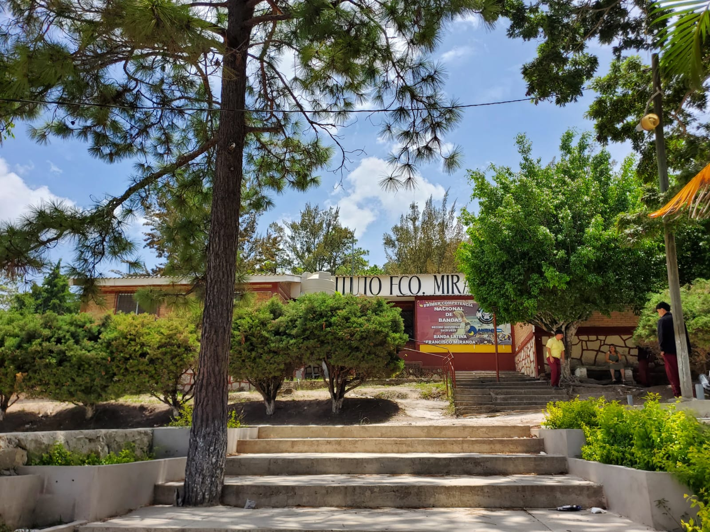

Una historia que comenzó con un sueño
El Instituto Francisco Miranda nació gracias a una comunidad convencida de que la educación era una oportunidad para transformar el futuro.
En 1988, el profesor Carlos Solís asumió la dirección de una institución privada que enfrentaba importantes desafíos. En sus primeros días, los estudiantes recibían clases incluso en los pasillos de la Escuela Marcos Carias Reyes. Sin embargo, el esfuerzo y la colaboración de la comunidad marcaron el inicio de una nueva etapa.
El 1 de octubre de 1988, el Instituto se trasladó al edificio donde actualmente funciona, gracias al apoyo del patronato de la comunidad. Con trabajo, donaciones y empeño, se repararon pupitres y se mejoraron las condiciones para ofrecer a los estudiantes un espacio digno para aprender.
Comienza la historia con esfuerzo, dedicación y la fe de una comunidad.
Se inaugura el edificio actual con el apoyo del patronato y de la comunidad.
El Instituto pasa a ser semioficial y mejora su infraestructura y apoyo académico.
Una institución fortalecida por la perseverancia, la educación y el compromiso.
Descubre la reseña histórica completa y los momentos que marcaron los primeros años del Instituto Francisco Miranda.
CONOCE NUESTRA HISTORIA COMPLETA →Visión
La visión del Instituto Técnico Francisco Miranda es mantenerse como una institución educativa de prestigio, comprometida con la formación integral de los jóvenes, brindando una educación técnica y científica de calidad que les permita enfrentar los nuevos retos de la sociedad y del mundo laboral.
Misión
Ser una institución líder en la formación de ciudadanos críticos, creativos y comprometidos con el bienestar de la comunidad.
Valores
Respeto
Honestidad
Responsabilidad
Solidaridad
Disciplina
Excelencia

Juan Carlos Herrera Espinoza
Director de la Institución
Nació el 12 de enero de 1977. Inició labores en la institución en 2007, aportando más de una década y media de servicio continuo y compromiso con la educación. Es Maestro en Educación Primaria y Licenciado en Ciencias con Orientación en Matemática, títulos obtenidos en la Universidad Pedagógica Nacional. Actualmente se encuentra finalizando la tesis para obtener la Maestría en Matemática Educativa, demostrando su interés permanente por la formación continua y la mejora de su práctica profesional.
A lo largo de su carrera en la institución, ha impulsado cambios significativos en la organización pedagógica y en la cultura escolar. Considera que uno de sus mayores logros es la transformación del Instituto Francisco Miranda, resultado de su dedicación, constancia y compromiso con la educación desde muy joven. Esta transformación abarca la renovación de metodologías de enseñanza, la implementación de proyectos didácticos orientados al aprendizaje activo y la mejora del clima institucional para favorecer el desarrollo integral del estudiantado.
Su enfoque docente se centra en la enseñanza significativa de las matemáticas: promueve el razonamiento lógico, la resolución de problemas reales y la articulación entre la teoría y la práctica. Ha trabajado en el diseño de unidades didácticas contextualizadas, evaluación formativa y uso de recursos manipulativos y tecnológicos para facilitar la comprensión matemática. Además, fomenta la inclusión educativa mediante estrategias adaptadas a diferentes ritmos y estilos de aprendizaje.
En la institución ha asumido responsabilidades de liderazgo pedagógico y colaboración profesional: coordinación de áreas, tutorías, capacitación docente interna y organización de talleres para colegas y padres. Participa en redes institucionales y en actividades comunitarias orientadas a fortalecer el vínculo escuela-familia y promover la continuidad escolar.
En su formación continua, además de la maestría en curso, se ha interesado por cursos y seminarios en evaluación educativa, didáctica de la matemática y tecnologías educativas. Está finalizando su tesis de maestría, la cual se centra en mejorar la enseñanza-aprendizaje de conceptos matemáticos clave (puede especificar tema y metodología si lo desea).
Como educador, valora la ética profesional, la perseverancia y la colaboración entre docentes. Sus metas a mediano plazo incluyen consolidar programas de formación docente en la institución, publicar materiales didácticos o artículos sobre experiencias pedagógicas y expandir proyectos que vinculen a los estudiantes con la comunidad mediante aplicaciones prácticas de las matemáticas.
Docentes
ANA GABRIELA SIMONS ZELAYA
Profesión / Cargo: Licenciada en Matemáticas, egresada de la Universidad Pedagógica Nacional Francisco Morazán (UPNFM). Profesora de Matemáticas, con una trayectoria de 12 años de experiencia docente en Tegucigalpa, Francisco Miranda. Clases impartidas: Matemáticas, Física y Dibujo Técnico.
Proyectos Destacados: Preparación y tutoría de estudiantes para competencia de alto rendimiento en las Olimpiadas de Matemáticas. Participación como jurado calificador en las Olimpiadas Matemáticas a nivel nacional.
Reseña del docente: Ana Gabriela Simons Zelaya, nacida el 31 de julio de 1990 en Tegucigalpa, Francisco Morazán, es una destacada educadora de 35 años y Licenciada en Matemáticas por la UPNFM. Actualmente se desempeña como docente en el Instituto Técnico Francisco Miranda, donde aporta sus 12 años de sólida experiencia (2014-2026) impartiendo asignaturas clave como Matemáticas, Física y Dibujo Técnico. A lo largo de su carrera, se ha distinguido no solo por su labor en el aula, sino también por su compromiso con el talento académico juvenil.
ANA LILIAM SOTO AGUILERA
Profesión / Cargo: Licenciada en Ciencias Naturales.
Proyectos Destacados: Información no proporcionada.
Reseña del docente: Dato no proporcionado.
ADA LIZETH ORDO�'EZ MARTÍNEZ
Profesión / Cargo: Licenciada en la Enseñanza del Español.
Proyectos Destacados: Información no proporcionada.
Reseña del docente: Información no proporcionada.
CELESTE MARÍA MACHUCA TEJEDA
Profesión / Cargo: Profesora y Licenciada en Ciencias Naturales con orientación en Química, Física y Biología. Especialista en Tecnologías y Alimentos.
Proyectos Destacados: Asistencia y coordinación de prácticas en el laboratorio de Ciencias Naturales; orientación en actividades experimentales y de investigación científica; organización y desarrollo de proyectos para la feria científica; promoción del aprendizaje práctico y uso adecuado de los recursos del laboratorio.
Reseña del docente: Profesional de la educación con 9 años de experiencia en la enseñanza de las Ciencias Naturales. Licenciada en Ciencias Naturales con orientación en Química y Biología y especialista en Tecnología y Alimentos. Originaria de La Paz, se ha destacado por su compromiso con la formación científica de los estudiantes, fomentando la investigación, el trabajo experimental y la participación en proyectos de feria científica.
CHRISTIAN OBED MEDINA ALVARADO
Profesión / Cargo: Profesorado en Educación Tecnológica Industrial con orientación en Electricidad en el grado de Licenciatura.
Proyectos Destacados: Proyectos de formación técnica en electricidad, desarrollo de prácticas de taller y acompañamiento en proyectos tecnológicos para la formación profesional de los estudiantes del Instituto Técnico Francisco Miranda.
Reseña del docente: Nació en San Pedro Sula el 18 de marzo de 1994. Cursó el bachillerato técnico industrial con orientación en mecánica automotriz en el Instituto Técnico Luis Bográn y creció en la Aldea Monte Redondo, km 27 de la carretera a Olancho. Durante su formación universitaria fue vicepresidente de la carrera de Educación Tecnológica en la UPFM. Ha ejercido como contratista independiente y se destaca por su liderazgo, compromiso y vocación de servicio en el ámbito educativo y técnico.
CLOSVIN FABRICIO YANEZ SANTOS
Profesión / Cargo: Docente del taller de Estructuras Metálicas.
Proyectos Destacados: Maestro de Educación Primaria; profesor en Educación Tecnológica con orientación en Mecánica Industrial; diplomado de formación pedagógica en educación superior; maestría en formulación, gestión y evaluación de proyectos.
Reseña del docente: Maestro de Educación Primaria con amplia formación pedagógica y técnica. Combina experiencia en el área metalmecánica con competencias en educación superior y gestión de proyectos.
EDWIN GEOVANNY RAUDALES LANZA
Profesión / Cargo: Docente de Taller de Madera.
Proyectos Destacados: Desarrolla proyectos prácticos en el taller de madera para fortalecer el aprendizaje técnico.
Reseña del docente: Nacido en Tegucigalpa el 22 de julio de 1983, especialista en carpintería y ebanistería. Se caracteriza por su compromiso, responsabilidad y dedicación en la enseñanza práctica, promoviendo la seguridad y el desarrollo de habilidades técnicas en sus estudiantes.
ENEDAS ALFONSO BERRIOS ALVARADO
Profesión / Cargo: Docente del Taller de Madera.
Proyectos Destacados: Lleva 16 años laborando en la institución y cuenta con amplia experiencia institucional.
Reseña del docente: Bachiller en Educación, licenciado en Educación Básica y en Educación Técnica Industrial. Con 31 años en la institución, aporta experiencia y continuidad en la formación técnica.
FÁTIMA YANETH RODRÍGUEZ
Profesión / Cargo: Docente de Administración General, Gestión Empresarial, Economía y Legislación. Coordinadora de TES y consejería estudiantil (HRAS).
Proyectos Destacados: Coordinación del programa TES; actividades de consejería estudiantil; impartición de administración general, gestión empresarial, economía y legislación.
Reseña del docente: Profesora con 56 años y 18 años de servicio en el instituto. Fuerte compromiso, responsabilidad y gran capacidad profesional en la formación de sus estudiantes.
FRANCIS ELIZABETH MONCADA SILVA
Profesión / Cargo: Licenciada en Taller de Hogar en el área de Belleza, Cosmetología, Corte, Nutrición y Alimentos.
Proyectos Destacados: Cursos prácticos de barbería, maquillaje, uñas acrílicas y cuidado facial; manualidades, piñatas y jabones artesanales; talleres de nutrición y gastronomía, elaboración de boquitas y salud.
Reseña del docente: Nacida el 8 de abril de 1970, con 21 años de servicio. Destacada educadora en talleres de nutrición, corte y confección, y belleza, promoviendo emprendimiento e innovación práctica.
FREDIS ARMANDO DOMÍNGUEZ MEDINA
Profesión / Cargo: Licenciado en Matemática y en Economía. Docente en Matemática con cargo administrativo.
Proyectos Destacados: Información no proporcionada.
Reseña del docente: Profesional con 19 años en la institución. Combina formación matemática y económica con experiencia docente y administrativa.
GABRIELA ARELY BELTRÁN RODRÍGUEZ
Profesión / Cargo: Docente de Educación Artística y Artes Musicales.
Proyectos Destacados: Participación en festivales, proyectos de identidad nacional, promoción de lectura y actividades motivacionales de trabajo en equipo.
Reseña del docente: Nacida el 5 de diciembre de 1992. Cuenta con 14 años de trayectoria docente, 13 en sector privado y 3 en sector público, destacándose por su ética profesional y valores.
JENNY ROSELI SOSA CHÁVEZ
Profesión / Cargo: Licenciada en la Enseñanza del Inglés; Perito Mercantil y Contador Público.
Proyectos Destacados: Proyectos de identidad nacional, festivales culturales, promoción de lectura y actividades motivacionales para estudiantes.
Reseña del docente: Más de 17 años de experiencia docente desde marzo de 2009. Su enfoque transmite responsabilidad, trabajo colaborativo y metas de vida a sus alumnos.
JOS�? MANUEL PINEDA GÁMEZ
Profesión / Cargo: Licenciado en Educación Artística. Director Artístico de la Banda Latina Francisco Miranda.
Proyectos Destacados: Creación de grupos artísticos desde cero, gestión autogestionaria de proyectos culturales y liderazgo en agrupaciones artísticas de la institución.
Reseña del docente: Profesor con trayectoria desde 2013 en educación musical. Reconocido por fundar proyectos artísticos sin apoyo económico externo y construir un legado cultural sostenible.
JUAN ANDR�?S IZAGUIRRE GONZÁLEZ
Profesión / Cargo: Subdirector del Instituto desde el 1 de septiembre de 2020.
Proyectos Destacados: Liderazgo institucional y apoyo pedagógico en la dirección técnica del centro educativo.
Reseña del docente: Licenciado en Pedagogía y Ciencias de la Educación, con Maestría en Educación Primaria y pasante de Derecho. Aporta experiencia directiva y pedagógica al instituto.
JUNIOR JOSU�? L�"PEZ MONTES
Profesión / Cargo: Docente en formación con estudios superiores en curso.
Proyectos Destacados: Continuidad de estudios superiores y formación profesional constante.
Reseña del docente: En constante crecimiento académico y profesional, enfocándose en seguir fortaleciendo su carrera docente.
KAREN LETICIA SÁNCHEZ BAUTISTA
Profesión / Cargo: Licenciada en Ciencias Sociales. Docente del área de Ciencias Sociales.
Proyectos Destacados: No ha participado en ningún proyecto registrado.
Reseña del docente: Maestra de educación primaria con 27 años de experiencia, egresada de la Escuela Normal Mixta Pedro Nufio y la UPNFM. Ha servido 25 años en el Instituto Francisco Miranda.
KATIA PATRICIA OSORTO GALO
Profesión / Cargo: Licenciada en Educación Media. Asistente de Secretaría y docente de Inglés.
Proyectos Destacados: Gestión y modernización administrativa; innovación en la enseñanza bilingüe; formación integral en educación básica.
Reseña del docente: Educadora con más de tres décadas en educación, combinando docencia primaria, bilingüe y funciones administrativas con vocación y compromiso institucional.
LESBY ELIETH MEDINA AGURCIA
Profesión / Cargo: Licenciada en Pedagogía con orientación en Planeamiento y Administración de la Educación. Secretaria General del instituto desde abril de 2003.
Proyectos Destacados: Gestión de seguridad social, ampliación de secciones, apertura de nuevas aulas, innovación curricular y coordinación académica.
Reseña del docente: Profesional con más de 20 años de trayectoria en administración y gestión educativa, destacada por su ética, liderazgo y contribución al crecimiento institucional.
LUIS EDUARDO SALGADO BENITEZ
Profesión / Cargo: Ingeniero Agrónomo y Bachiller en Ciencias y Letras. Docente del área de Agroindustria.
Proyectos Destacados: Información no proporcionada.
Reseña del docente: Graduado en agronomía y con más de dos años de experiencia en el instituto, aporta conocimientos en producción agrícola y agroindustrial.
MARÍA DE LA PAZ ÁLVAREZ YANES
Profesión / Cargo: Maestra de Educación Media en Comercio. Coordinadora de práctica del instituto.
Proyectos Destacados: Coordinación de prácticas académicas y servicio estricto en el instituto.
Reseña del docente: Originaria de Alianza, Valle. Estudió en la UPNFM y desde entonces se ha dedicado a fortalecer la formación práctica de los estudiantes del instituto.
MARIO LEONEL ÁVILA MARADIAGA
Profesión / Cargo: Licenciado en Educación Tecnológica Industrial con orientación en Electricidad. Docente del área de Electricidad.
Proyectos Destacados: Mantenimiento eléctrico del colegio, tableros de práctica, apoyo a talleres y conocimientos en prevención.
Reseña del docente: Pedagogo comprometido con la formación integral y el desarrollo académico de los jóvenes, enfocado en procesos educativos innovadores y humanos.
MARISABEL ROSALES
Profesión / Cargo: Licenciada en Pedagogía y Ciencias de la Educación. Asistente de Orientación.
Proyectos Destacados: Talleres para padres, gobierno estudiantil, cine benefactor, seguimiento psicopedagógico y campañas de prevención.
Reseña del docente: Pedagoga comprometida con la formación integral y el bienestar emocional de estudiantes y familias, que promueve ambientes inclusivos y de diálogo.
MARLON NOEL IZAGUIRRE VELÁSQUEZ
Profesión / Cargo: Profesor de Educación Comercial en el grado de Licenciatura. Consejero 1 de estudiantes en jornada matutina.
Proyectos Destacados: Coordinación TES, proyectos comunitarios y ambientales, infraestructura institucional como kiosco, cafetería y muros de contención.
Reseña del docente: Consejero y docente con trayectoria desde 2009. Se caracteriza por su compromiso con el crecimiento comunitario y académico del instituto.
MAYRA ALEJANDRA MARTÍNEZ AGUILAR
Profesión / Cargo: Licenciada en la Enseñanza del Español. Docente en el área de Español.
Proyectos Destacados: Desarrollo y fortalecimiento de competencias en oratoria y expresión oral, con énfasis en comunicación efectiva.
Reseña del docente: Licenciada en Letras y Lenguas Españolas por la UPNFM. Tiene una sólida formación en enseñanza de la lengua y literatura, y actualmente reside en Comayagua.
MIRIAM JANETH ORTEZ NOVOA
Profesión / Cargo: Licenciada en Industrialización Agrícola, Industrialización Pecuaria, Tecnología en Alimentos y diseño de plantas agroindustriales. Docente en Ciencias Naturales.
Proyectos Destacados: Proyectos de sostenibilidad agroindustrial, aprendizaje práctico, mentoría en liderazgo ético y transferencia tecnológica a pequeños productores.
Reseña del docente: Ingeniera con perfil interdisciplinario que combina ingeniería industrial con ciencias naturales. Enfatiza la sostenibilidad y el desarrollo de capacidades agroindustriales en sus estudiantes.
RODYN JAVIER FIGUEROA OSORTO
Profesión / Cargo: Docente en Carpintería y Ebanistería con formación en electricidad, ingeniería industrial, metalmecánica, cerámica y metalurgia.
Proyectos Destacados: Enseñanza técnica en diseño y elaboración de trabajos en madera, y emprendimiento agrícola con la marca Habaneros del Valle de Tamara.
Reseña del docente: Profesional con formación amplia y certificado por INFOP, respaldado por una larga trayectoria docente y emprendimiento en el sector agrícola.
SANTIAGO HUMBERTO F�sNEZ Z�s�'IGA
Profesión / Cargo: Docente de Educación Física en el nivel de educación media.
Proyectos Destacados: Dirección de justas deportivas, planificación de maratón atlética institucional y gestión de campeonatos de fútbol.
Reseña del docente: Docente con nueve años en la institución, reconocido por su disciplina, arraigo y aporte al desarrollo integral de los estudiantes.
SUYAPA JANETH PINEDA L��PEZ
Profesión / Cargo: Docente de Legislación Mercantil, Aduanas, Contaduría de Costos e Informática Contable.
Proyectos Destacados: Formación técnica y profesional en áreas jurídica, administrativa, contable y tecnológica.
Reseña del docente: Con tres años de servicio en la institución, se destaca por su compromiso, responsabilidad y dedicación al fortalecimiento académico.
VALESKA YAMILETH MEJÍA
Profesión / Cargo: Profesora de Educación Media en Educación Técnica Industrial con orientación en Madera.
Proyectos Destacados: Equipamiento del taller de carpintería, coordinación académica, consejería estudiantil y liderazgo en talleres técnicos.
Reseña del docente: Profesional con amplia trayectoria desde 1998, destacada por su aportación al desarrollo del taller de carpintería y por su espíritu emprendedor con la marca Kakawa Chocolates.
VANESSA LIZETH GALINDO VELÁSQUEZ
Profesión / Cargo: Licenciada en Educación Técnica Industrial con orientación en Metal Mecánica. Docente de Taller de Estructuras Metálicas y Dibujo Técnico.
Proyectos Destacados: Producción de bancas recicladas para el colegio; convivencia técnica en metalmecánica y diseño de procesos industriales.
Reseña del docente: Profesora con experiencia técnica y compromiso social. Ha combinado la formación técnica con proyectos personales de mejora de vida y comunidad.
WENDY PATRICIA ANDINO AMADOR
Profesión / Cargo: Licenciada en Educación Primaria y Ciencias Sociales, con Maestría en Administración de Proyectos. Docente en Ciencias Sociales.
Proyectos Destacados: Participación en Movimiento Juventud, promoción del instituto, y proyecto '¡Viva la Juventud!'.
Reseña del docente: Con una extensa trayectoria en la educación y la gestión educativa, ha sido directora, secretaria y docente universitaria. Su perfil se caracteriza por vocación de servicio y liderazgo en proyectos educativos.
WILMER JAVIER AGUILAR DOMÍNGUEZ
Profesión / Cargo: Técnico Universitario en Informática, Licenciado en Informática Educativa y Especialista en Robótica. Docente encargado de Informática.
Proyectos Destacados: Gestión de bienes nacionales, creación del laboratorio de robótica, participación en ferias de ciencias y avances hacia etapas distritales.
Reseña del docente: Formado en la Universidad Pedagógica, con compromiso en tecnologías educativas y desarrollo de soluciones innovadoras para el instituto.
WILMER ALEXIS GUEVARA CÁRDENAS
Profesión / Cargo: Licenciado en Ciencias Naturales con especialidad en Biología y Química. Docente de Ciencias Naturales, Biología, Química y Física.
Proyectos Destacados: Laboratorio Vivo de Ciencias y Feria Ambiental y Científica para estudiantes de décimo grado.
Reseña del docente: Biólogo con 18 años de experiencia. Motiva a los estudiantes a experimentar, investigar y cuidar el entorno con un enfoque práctico y crítico.

CARLOS FERNANDO MEDINA
Profesión / Cargo: Licenciado en Orientación Educativa / Docente / Jefe de Orientación.
Proyectos Destacados: Todo lo que tenga que ver con el departamento de orientación: rendimiento académico, trabajo, beneficios sociales, beneficios para los chicos, etc.
Reseña del docente: Maestro de educación primaria, graduado en 2009. Licenciado en Orientación Educativa desde 2016. Magíster en Transformación Digital de Gestores Públicos de la Universidad de España, Madrid. Master en Formato de Negocios. Ha trabajado como director y maestro de un centro educativo de educación básica. Actualmente, su puesto de trabajo es como coordinador académico del Instituto Jesús Aguilar Paz. Ha trabajado 9 o 10 años en la Dirección Distrital Número 12.
DANILO JOS�? BANEGAS FIGUEROA
Profesión / Cargo: Licenciado en Educación Técnica Industrial y estudiante de Derecho. Docente de Taller de Madera y Estructuras Metálicas.
Proyectos Destacados: Coordinación de talleres, consejería estudiantil y docencia en áreas técnicas y profesionales.
Reseña del docente: Docente comprometido con la formación técnica y el desarrollo integral de la comunidad educativa mediante la enseñanza práctica y el acompañamiento profesional.
IRMA YOLANDA ERAZO LAGOS
Formación: Licenciada en Pedagogía y Ciencias de la Educación (2019), UNAH, Tegucigalpa Francisco Morazán.
Especialización adicional: Perito Mercantil y Contador Público; Curso de Cristianismo Tecnológico Juan Pablo, Tegucigalpa Francisco Morazán.
Experiencia: Sub-coordinadora del Colectivo Divina Providencia (internas) (2021); Territorio 25, militante de Libre desde 2017; Mesas Electorales (2017 - 2021); Práctica profesional universitaria (2019), Centro de Estudios y Solidaridad con América Latina (CESAL); Práctica profesional secundaria (2007), CDHI.
Rol actual: Desde marzo de 2023 integra el equipo docente e institucional como Consejera Estudiantil. Brinda acompañamiento integral a la comunidad estudiantil, promoviendo disciplina, convivencia escolar, seguimiento académico y control de asistencia y puntualidad.
ROY
Profesión / Cargo: Pasante universitario de la carrera de Ingeniería en Sistemas. Consejero de la Jornada vespertina.
Proyectos / Implementación: Implementación de programas de mentoría académica y optimización de procesos disciplinarios y de orientación estudiantil para la jornada vespertina.
Formación continua: Formación continua como pasante universitario en Ingeniería en Sistemas, aportando competencias tecnológicas y metodologías de gestión a la administración y supervisión institucional en la jornada de la tarde.
Instalaciones
Noticias

Inicia el ciclo escolar
Comenzamos el nuevo año lectivo con entusiasmo y renovadas energías.
Leer más
Semana cultural
Actividades culturales y deportivas para toda la comunidad educativa.
Leer más
Nuevas aulas equipadas
Se han incorporado laboratorios y aulas con tecnología para aprendizaje activo.
Leer másCalendario Escolar
| Evento | Fecha |
|---|---|
| Inicio de clases | 01/07/2026 |
| Exámenes parciales | 15/09/2026 |
| Vacaciones de invierno | 20/12/2026 - 05/01/2027 |
| Clausura | 15/06/2027 |
Estadísticas
39
Maestros
0
Estudiantes
0
Aulas
38
Años